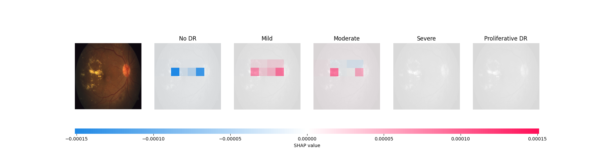

Patient: John Doe
Gender: Male
Image
Diagnosis: Moderate
Your AI-generated diagnosis is Moderate. The image above shows your own retina imagery (left 1) and the 5 possible diagnosis (right 2-5). Under each possible diagnosis, the red areas indicate the regions of your imagery that are most important for the AI to make its diagnosis. Conversely, the bluer regions more strongly discourage the model from making such diagnosis.